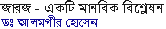
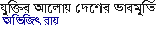
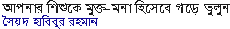

Some Recommended Articles of MM
Building of a Society based on Science Oriented Thought Dr. Ajoy Roy
Do Our Values Come from God? Victor J. Stenger
Science in the Eyes of a Scientist Dr. Mark Perakh
Should Evolution be a part of science? Yes! T H. Huxley
The Uncaused Universe Dr. Victor Stenger
A Refutation of the Design Argument for God Aparthib
Does Religion Define Morality? Aparthib
Dogmatism of the Paranormalist! Brent Meeker
My God Problem Natalie Angier
Why I Remain an Atheist Shabnam Nadiya
My Experience With Islam Jahed Ahmed
Super-Scientific Religious Scriptures! Avijit Roy
Does Quran have any scientific miracles ? Avijit Roy
Who Authored the Qur’an?—an Enquiry Abul Kasem

Some Recommended Articles of MM... contd.
Post Modernism, Hindu Nationalism & Vedic Science Meera Nanda
Some Bible-code related experiments and discussions Dr. Mark Perakh
Does the Soul Exist? Syed Kamran Mirza
How Fundamentalists Win Elections - The Indian Example Mehul Kamdar
State of Minorities in Bangladesh: From Secular to Islamic Hegemony Saleem Samad
The rise of militant Fundamentalism and Communal Persecution in Bangladesh Shahriar Kabir
We Are Not Communal ..Perhaps Shabnam Nadiya
India: Gujarat riots - communalization of state and civic society Prof. Jayanti Patel
No Progress Without a Secular Society Taslima Nasrin
Secular Humanism and Politics: When Should We Speak Out? Paul Kurtz
Farewell - Fairplay! Paul Kurtz
Review of Tagore's The Home and the World by George Lukács fwd by Abul Kalam [ * Another Review by Mohammad Quayum] [ MM special : Tagore without illusion]
"Science of Evolution" [Part-1 | Part-2 | Part-3 | Part-4] Responses
Islam needs to evolve Tahir Aslam Gora
Katrina’s curse! Jaffor Ullah [More on his personal tragedy...]
Taslima Nasrin’s Ka: HassanAl Abdullah [Response: 1 | 2 | 3 | 4]
Patriotism and Government Tushar Sarkar
What’s Sharia ? Why Sharia ?: Hasan Mahmud debates with Qamruzzaman of Jamate Islami (Listen to audio )


(Part: 1 | 2)
(Part: 1 | 2 | 3 | 4 )
(Response: 1 | 2 ) (Part: 1 | 2 )
(Part: 1 | 2 )
(Part: 1 | 2 | 3 | 4 | 5) [Response : Sajal | Shujon]
(Part: 1 | 2 | 3 | 4 | 5 | 6 | 7 | 8)